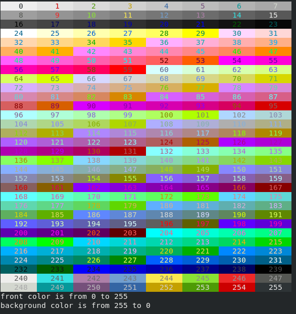
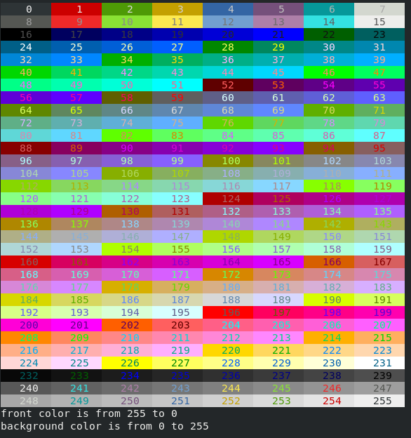

bash_shell
//
代码转换
批量改名例如将1.png改成0001.png, bash中for循环可以是C语言风格的
declare ni
for ((i = 1; i < 23; i++))
do
ni=$i
while [ ${#ni} -lt 4 ]
do
ni=0$ni
done
mv $i.png $ni.png
done
输出带颜色的文字及控制台格式控制
echo -e "\033[34mblue text\033[0m"
or
echo -e "\e[34mblue text\033[0m"
or
echo -e "\x1b[34mblue text\033[0m"
说明:
echo为display a line of text, echo the strings to standard output
-e enable interpretation of backslash escapes(开启反斜线字符转译)
\e和\033和\0x1b等价表示
[表示样式和颜色参数序列的开始, 34表示前景色为蓝色, m表示参数序列结束
blue text显示的文字
[0m类似前面的[34m, 0表示重置所有属性, 若不重置则将导致以后的输出的前景色都是前面设置的蓝色
手册的部分信息如下:
Echo the STRING(s) to standard output.
-ndo not output the trailing newline
-eenable interpretation of backslash escapes
-Edisable interpretation of backslash escapes (default)
If -e is in effect, the following sequences are recognized:
\\ backslash
\aalert (BEL)
\bbackspace
\c produce no further output
\eescape
\f form feed
\nnew line
\r carriage return
\t horizontal tab
\v vertical tab
\0NNNbyte with octal value NNN (1 to 3 digits)
\xHH byte with hexadecimal value HH (1 to 2 digits)
控制颜色及格式的转义序列格式如下:
echo -e "\033[参数列表m"
参数列表中每个参数间用;分隔, 最后一个没有间隔符;如
echo -e "\033[5;33;41m闪烁;黄字;红底色\033[0m"
各参数值如下:
1.格式
1.1Set
1.2Reset
2.8or16 Colors
2.1文字前景色
2.2背景色
3.88or256颜色
3.1文字前景色
转义序列为\e[38;5;颜色编号m
颜色编号为0到255, 相应的颜色可运行下面的代码, 其中文字的颜色为从0到255, 背景色的值为从255到0
for cn in {0..255} ; do
if [ ${cn} -lt 100 ]; then
if [ ${cn} -lt 10 ]; then
echo -en "\e[48;5;$((255 - ${cn}));38;5;${cn}m ${cn} "
else
echo -en "\e[48;5;$((255 - ${cn}));38;5;${cn}m ${cn} "
fi
else
echo -en "\e[48;5;$((255 - ${cn}));38;5;${cn}m ${cn} "
fi
nl=$((${cn} % 8))
if [ ${nl} -eq 7 ]; then
echo -e "\e[0m"
fi
done
echo -en "\e[0m"
echo "front color is from 0 to 255"
echo "background color is from 255 to 0"

3.2背景色
转义序列为\e[48;5;颜色编号m
颜色编号为0到255, 相应的颜色可运行下面的代码, 背景色的值为从255到0, 其中文字的颜色为从0到255
for cn in {0..255} ; do
if [ ${cn} -lt 100 ]; then
if [ ${cn} -lt 10 ]; then
echo -en "\e[38;5;$((255 - ${cn}));48;5;${cn}m ${cn} "
else
echo -en "\e[38;5;$((255 - ${cn}));48;5;${cn}m ${cn} "
fi
else
echo -en "\e[38;5;$((255 - ${cn}));48;5;${cn}m ${cn} "
fi
nl=$((${cn} % 8))
if [ ${nl} -eq 7 ]; then
echo -e "\e[0m"
fi
done
echo -en "\e[0m"
echo "front color is from 255 to 0"
echo "background color is from 0 to 255"

8色和样式的示例代码
for STYLE in 0 1 2 4 5 7; do
for FG in 30 31 32 33 34 35 36 37; do
for BG in 40 41 42 43 44 45 46 47; do
CTRL="\033[${STYLE};${FG};${BG}m"
echo -en "${CTRL}"
echo -n "${STYLE};${FG};${BG}"
echo -en "\033[0m"
done
echo
done
echo
done
# Reset
echo -e "\033[0m"
其它转义序列:
\033[nA
光标上移n行
\033[nB
光标下移n行
\033[nC
光标右移n行
\033[nD
光标左移n行
echo -e "\033[4A 光标上移4行 \033[0m"
\033[y;xH
设置光标位置
\033[2J
清屏
\033[K
清除从光标到行尾的内容
\033[s
保存光标位置
\033[u
恢复光标位置
\033[?25l
隐藏光标
\033[?25h
显示光标
可参考如下网址:
https://linux.die.net/man/4/console_codes
shell bash终端中输出的颜色和格式详解
环境变量配置文件
/etc/profile: 此文件为系统的每个用户设置环境信息,当用户第一次登录时,该文件被执行.并从/etc/profile.d目录的配置文件中搜集shell的设置.
/etc/bashrc: 为每一个运行bash shell的用户执行此文件.当bash shell被打开时,该文件被读取.
~/.bash_profile: 每个用户都可使用该文件输入专用于自己使用的shell信息,当用户登录时,该文件仅仅执行一次!默认情况下,他设置一些环境变量,执行用户的.bashrc文件.
~/.bashrc: 该文件包含专用于你的bash shell的bash信息,当登录时以及每次打开新的shell时,该该文件被读取.
~/.bash_logout: 当每次退出系统(退出bash shell)时,执行该文件.
另外,/etc/profile中设定的变量(全局)的可以作用于任何用户,而~/.bashrc等中设定的变量(局部)只能继承/etc/profile中的变量,他们是"父子"关系.
$(s) 执行其中的字符串s所对应的命令
"$(s)" 执行其中的字符串s所对应的命令后所得结果的字符串
readlink -f [filename]
print value of a symbolic link or canonical file name
-f, --canonicalize
canonicalize by following every symlink in every component of the given name recursively; all but the last component must exist
查看帮助
man readlink
或
readlink --help
dirname [name]
Output each NAME with its last non-slash component and trailing slashes
查看帮助
man dirname
或
dirname --help
当前路径, 不在.sh文件里, 直接在shell中执行时等价于pwd
echo "$(dirname "$(readlink -f "${0}")")"